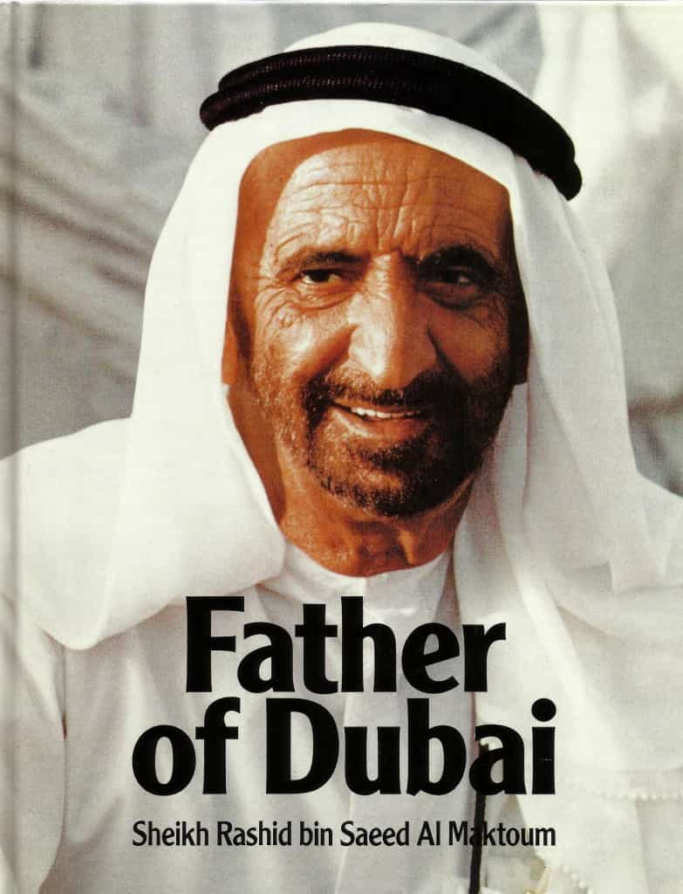

Generally speaking, whenever ROK and its readers comment on some aspect of the Arab-Muslim world, negative light sheds upon the region and its inhabitants. Although less alien from a Western point of view, the aversion is perhaps also directed towards Dubai, known for its massive wealth, largely created under slave-like conditions by migrant workers with few if any substantial labor rights.
In spite of these negative depictions, Dubai is obviously an interesting place as a booming post-oil era trade hub, and after having spent a vacation there and increasing my knowledge on the wealthy emirate’s history and economic development, I intend to describe its history and current profile. Additionally, I will also consider its value from a mere tourist point of view.
The formation of the United Arab Emirates
The modern history of Dubai goes back to 1833 when the Bani Yas tribe resettled from Abu Dhabi to Dubai, a land which previously had been inhabited. This was the second wave of modern migration. Since that year, the Maktoum family, a branch of the Bani Yas tribe, has ruled Dubai. The government structure is patrimonial and autocratic, although with democratic-like features among the rulers.
In colonial times the region has also been under the control of Portuguese, Dutch and British settlers. In fact, it was until 1971 the land was a British protectorate.
In pre-modern times, the land suffered from local and regional slave trade and pirates, much different from its now largely crime-free, authoritarian yet hedonistic aura. In the more distant pre-modern past, this was the starting point for long caravans, and raiding has always been part of that phenomenon.
Since the British local trade interests were threatened, they organized anti-pirate measures, and whether directly or indirectly, the British culture has significantly influenced the economic structures and modalities of this region. The British hegemony was made possible due to the gradual dissolution of the Ottoman empire, which created a regional vacuum for European powers to fill.
Since 1972, the UAE consists of seven emirates of which Dubai is the second largest in demographic terms after the capital Abu Dhabi, which likewise constitutes an emirate. The current population is over 9 million, of which about 2.8 millions live in Dubai. About 90% of the workforce in the private sector is made up of non-citizens.
The citizens of the UAE are granted a cradle-to-grave welfare, including first-world education and medical services. Arab-speaking expats have better chances to partially integrate and be part of the UAE community, but there is a substantial difference between Emiratis and foreigners (especially poor workers from Asia and Africa).

How Dubai became an economic powerhouse
Large amounts of oil were found in neighboring Saudi Arabia and Iran in the early 20th Century. In 1966, Dubai had similar luck and is the main factor behind today’s massive wealth. Sheikh Rashid has been a key figure in the creation of high-class infrastructure and economic institutions, such as Dubai Airport, built in 1959 but obviously reconstructed and refined multiple times in parallel with growing wealth.
From the 1970s onward, the UAE has been politically and socially stable, and managed to have constructive relations with its neighbors, as well as significant global players such as the United States, EU and China. This has secured the inflows and outflows of capital and favored the mobility of the foreign workforce.

However, since economic and material development tend to be based on cumulative processes, Dubai has significantly diversified its economy. The difference is that Dubai did not have to go through several stages, but instead managed to leap the stages to today’s high-mass consumption. Currently, revenues from oil and gas make up only about 5%, whereas trade, real estate, construction and financial services constitute its largest sectors, alongside mining, shipping, tourism, and mass communication.
An oasis for the global middle and upper classes
Dubai has similarities with wealthy East Asian cities and city-states such as Singapore, Hong Kong and Macau, and culturally with Kuala Lumpur (Malaysia) and Marrakech (Morocco), and makes up sort of an oasis for the global middle and upper classes. In 2016, Dubai had 14.9 million overnight visitors and the economy is characterized by massive inflows and outflows and a steady growth rate at about 8% annually.
Though the future is unforeseeable, one should expect increased yet non-linear growth in at least the coming decades. Dubai is a prime example of an interplay between global human capital and localization of economic activities. That is the type of sane and limited globalization that also us Westerners want. The local interests are the basis, whereas relative “globalization” is only a means that might serve this end.
Although there are Westerners who reside there more permanently, Dubai is a typical location for either short stays or so-called circular migration. One resides there weeks, months, or in some cases even years, but in the end many prefer their home countries. After all, a hyper-materialistic sheikhdom built on expatriate exploitation and at least partially Wahhabi-influenced doctrines, where one is expected to awe Shaikh Khalifa Bin Zayed Nahyan, is not a place to spend one’s entire lifetime.
From my own, very recent experiences, Dubai is absolutely stunning from a material point of view. The architecture, hotels, scenery and activities are at least at the same level as those in Las Vegas, and slightly better than Macau and Singapore.
Although it is unrealistic that the rest of the Islamic world will follow this pattern, it is still preferable than militant Jihadism and other forms of Islam. Symbolically, my Arab driver put on the radio which played Ariana Grande’s song about being excessively fucked by a badboy, “Side to side”, while going on a desert safari tour. The soft power of Western pop culture is obviously more appealing than to recite the Quran.
Like East Asian countries, contemporary Dubai is a hybrid culture. The difference is of course that places like Japan, South Korea and Singapore mix their post-Confucian ethos with Western-global culture, whereas Dubai blend their Arab-Muslim heritage with Western practicalities, knowledge and hedonism. For instance, the sexes are generally self-segregated in the metro (there are segregated train cars in Tokyo too).
At one moment I had to admonish my girlfriend as she wanted to step in one of the mixed-sex areas, where severely sex-hungry men will likely grab females by the pussy or at least ass. The strategy for the rational male, who has to make most if not all of the important decisions in order to accommodate, is to let the girls stay in the females and children-only section, while you stand close to her in the male area. Although I prefer the culture in East Asia I find Dubai slightly appealing.
Apart from the desert tour, I recommend Ferrari world in Abu Dhabi (where one can go with the world’s fastest roller coaster, Formula Rossa, with a maximum speed of 240 kilometers per hour), Buddha Bar in the luxurious Dubai Marina, Burj Khalifa, and a stay at some of the city’s five-star hotels.
Expect to meet only a few locals, multiple Chinese and Korean tourists, a few Europeans and Americans, and a service staff which mainly consists of South Asian, Filipino or African people. If you have any doubts about the Arabs, you do not have to deal with them much anyway, as long as you abide by the law.
The price levels and excessive heat, at least between April and October, are two downsides. There are ways to hack around that but the major tourist attractions, besides the desert safari tours (about 50 US dollars), cost quite a lot.

Conclusion
Dubai is an economic powerhouse that takes some of the positive and negative features of the region and mix them with Western know-how and lavish consumerism. The UAE, Dubai and Abu Dhabi in particular, has managed to develop from a poor to a rich country in only a few decades. As far as tourism goes, I would highly recommend a visit there.
Read More: How Privileged Urban Liberals Profit From Poverty